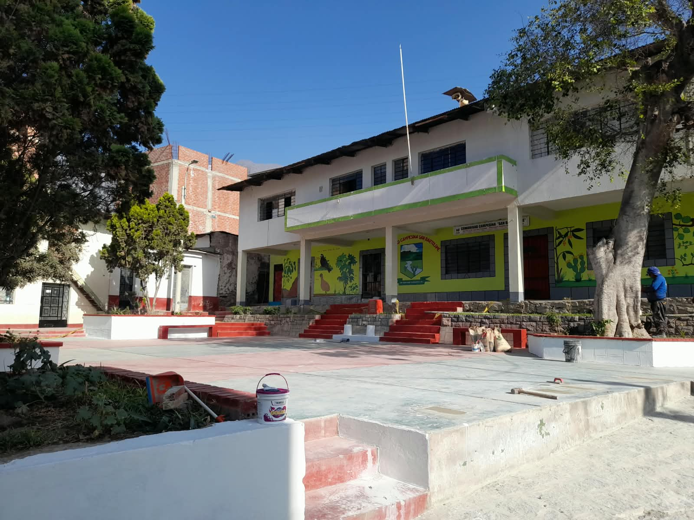

La Plaza Principal de San Bartolomé es uno de los espacios públicos más representativos del distrito. Se encuentra en el centro del pueblo y está rodeada por edificaciones importantes, entre ellas la Iglesia de San Bartolomé y la municipalidad. Es un lugar de encuentro para los pobladores y un punto desde donde se puede conocer parte de la vida cotidiana, cultural y tradicional de San Bartolomé. Distrito De San Bartolome

La plaza forma parte del centro tradicional de San Bartolomé y ha acompañado el desarrollo de la comunidad a lo largo de los años. Su ubicación frente a la iglesia y cerca de las principales instituciones del distrito la convirtió en un espacio importante para reuniones, actividades sociales, celebraciones y festividades locales. Además, la documentación municipal registra intervenciones para mejorar las calles, veredas y accesos alrededor de la plaza, contribuyendo a conservar y mejorar este espacio central del pueblo.
Destaca por las edificaciones tradicionales que rodean la plaza, especialmente la Iglesia de San Bartolomé y las construcciones del centro del distrito.
Desde la plaza se puede apreciar el entorno urbano de San Bartolomé, acompañado por los cerros y el paisaje del valle del río Rímac.
Su entorno está relacionado con el paisaje natural del valle, donde destacan los cerros y las zonas agrícolas características del distrito.
La Plaza Principal de San Bartolomé es un espacio que representa la vida, historia y tradición del distrito
Pregunta a TurisIA sobre Chucuncuya.